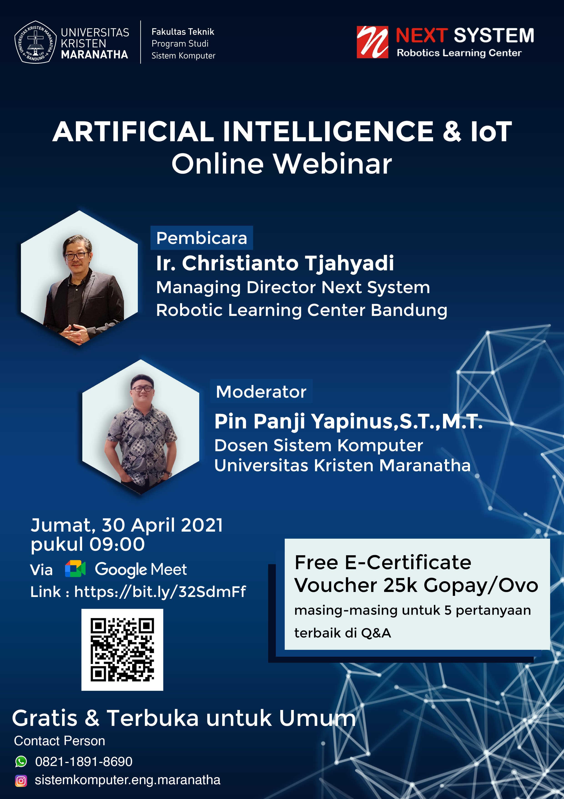

Deskripsi Event:

Artificial intelligence and IoT Webinar
Friday, April 30 · 9:00 – 11:00am
Dapatkan Free e-sertifikat dan hadiah voucer gopay/ovo untuk 5 peserta beruntung.
ARTIFICIAL INTELLIGENCE (AI) AND INTERNET of THINGS (IoT) Webinar
Internet of Things berkembang sangat pesat. Tidak lagi terbatas pada kalangan tertentu melainkan sudah merambah ke hampir setiap sudut kehidupan. IoT dapat mengumpulkan data sampai dengan mengontrol perangkat dari jarak yang jauh dengan mengandalkan koneksi internet. Bagaimana jika data yang dikumpulkan dapat diolah secara pintar untuk suatu pengontrolan?
Ikuti webinar menarik ini bersama dengan narasumber ahli, Managing Director Next System, Christianto Tjahyadi.
NEXT SYSTEM Robotics Learning and Experience Center, yang dikenal juga dengan nama Padepokan NEXT SYSTEM Bandung, menyelenggarakan sejumlah program pelatihan intensif untuk pembelajaran mikrokontroler, robotik, otomasi / kontrol, internet of things, computer vision, machine learning / deep learning dan teknologi informasi.
22 November 2021
90 Peserta
32 November 2021
Online